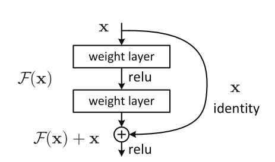

ResNet源码解读⚓︎
本文对残差神经网络（ResNet）的源码进行解读。残差神经网络是由微软研究院的何恺明、张祥雨、任少卿、孙剑等人提出的。它的主要贡献是发现了在增加网络层数的过程中，随着训练精度(Training accuracy)逐渐趋于饱和，继续增加层数，training accuracy 就会出现下降的现象，而这种下降不是由过拟合造成的。他们将这一现象称之为“退化现象（Degradation）”，并针对退化现象发明了 “快捷连接（Shortcut connection）”，极大的消除了深度过大的神经网络训练困难问题。神经网络的“深度”首次突破了100层、最大的神经网络甚至超过了1000层。（在此，向已故的孙剑博士表示崇高的敬意）
通过本文你将学习到：
-
梯度消失/爆炸的简介
-
代码里面为什么要设计BasicBlock和Bottleneck两种结构
-
代码里面的expansion作用
1 基本介绍⚓︎
随着卷积神经网络的出现，人们发现多层卷积或者全连接网络的效果大于单层卷积或者全连接网络。于是很多人潜意识认为网络的层数越多，其效果就会越好。但是当时微软研究院的何恺明、张祥雨、任少卿、孙剑等人发现加深网络的深度后，整个网络的效果反而变差了许多。他们认为很深的网络无法训练的原因可能是网络在信息传递的时候或多或少会存在信息丢失，损耗等问题，同时还可能出现梯度消失或者梯度爆炸现象。针对这个问题，他们提出了ResNet以期望解决这个问题，ResNet的出现也让神经网络逐渐真正走向深度神经网络。ResNet最大的贡献在于添加了shortcut connection将输入直接连接到后面的层，一定程度缓解了梯度消失和梯度爆炸并提高了深度神经网络的效果。接下来我们详细的解释一下梯度消失和梯度爆炸。
梯度消失和梯度爆炸的根源主要是因为深度神经网络结构以及反向传播算法，目前优化神经网络的方法都是基于反向传播的思想，即根据损失函数计算的误差通过反向传播的方式，指导深度网络权值的更新。误差梯度是神经网络训练过程中计算的方向和数量，用于以正确的方向和合适的量更新网络权重。 在深层网络或循环神经网络中，误差梯度可在更新中累积，变成非常大的梯度，然后导致网络权重的大幅更新，并因此使网络变得不稳定。在极端情况下，权重的值变得非常大，以至于溢出，导致 NaN 值。 网络层之间的梯度（值大于 1.0）重复相乘导致的指数级增长会产生梯度爆炸。 在深度多层感知机网络中，梯度爆炸会引起网络不稳定，最好的结果是无法从训练数据中学习，而最坏的结果是出现无法再更新的 NaN 权重值。
而在某些情况下，梯度会变得非常小， 网络层之间的梯度（值小于 1.0）重复相乘导致的指数级变小会产生梯度消失。在最坏的情况下，这可能会完全停止神经网络的进一步训练。例如，传统的激活函数(如双曲正切函数)具有范围(0,1)内的梯度，反向传播通过链式法则计算梯度。这样做的效果是，用这些小数字的n乘以n来计算n层网络中“前端”层的梯度，这意味着梯度(误差信号)随n呈指数递减，而前端层的训练非常缓慢。最终导致更新停滞。
2 源码解读⚓︎
为了帮助大家对ResNet有更好的理解，我们使用torchvision的ResNet源码进行解读。
2.1 卷积核的封装⚓︎
在代码的开始，首先封装了3x3和1x1的卷积核，这样可以增加代码的可读性。除了这种代码写法外，还有许多深度学习代码在开始也会将卷积层，激活函数层和BN层封装在一起，同样是为了增加代码的可读性。
def conv3x3(in_planes: int, out_planes: int, stride: int = 1, groups: int = 1, dilation: int = 1) -> nn.Conv2d:
"""3x3 convolution with padding"""
return nn.Conv2d(
in_planes,
out_planes,
kernel_size=3,
stride=stride,
padding=dilation,
groups=groups,
bias=False,
dilation=dilation,
)
def conv1x1(in_planes: int, out_planes: int, stride: int = 1) -> nn.Conv2d:
"""1x1 convolution"""
return nn.Conv2d(in_planes, out_planes, kernel_size=1, stride=stride, bias=False)
2.2 基本模块的设计⚓︎
ResNet网络是由很多相同的模块堆叠起来的，为了保证代码具有可读性和可扩展性，ResNet在设计时采用了模块化设计，针对不同大小的ResNet，书写了BasicBlock和BottleNeck两个基本模块。这种模块化的设计在现在许多常见的深度学习代码中我们可以经常看到。
ResNet常见的大小有下图的ResNet-18，ResNet-34，ResNet-50、ResNet-101和ResNet-152，其中网络后面的数字代表的是网络的层数。

为了帮助大家更好的理解，我们以ResNet101为例。
| layer_name | 次数 |
|---|---|
| conv1 | 卷积1次 |
| conv2_x | 卷积3 x 3 = 9次 |
| conv3_x | 卷积4 x 3 = 12次 |
| conv4_x | 卷积23 x 3 = 69次 |
| conv5_x | 卷积3 x 3 = 9次 |
| fc | average pool 1次 |
| 合计 | 1 + 9 + 12 + 69 + 9 + 1 = 101次 |
观察上面各个ResNet的模块，我们可以发现ResNet-18和ResNet-34每一层内，数据的大小不会发生变化，但是ResNet-50、ResNet-101和ResNet-152中的每一层内输入和输出的channel数目不一样，输出的channel扩大为输入channel的4倍，除此之外，每一层的卷积的大小也变换为1，3，1的结构。基于这个发现，我们可以将ResNet-18和ResNet-34的构成模块当作一类，ResNet-50、ResNet-101和ResNet-152这三类网络的构成模块当作一类。事实上，torchvision的源码也是基于这种设计思想，使用如下图的BasicBlock（左）和BottleNeck（右）模块，并且为了控制输入和输出的通道数目的变化，在代码中输出的通道维度也通过expansion进行控制，两个block类输入一个通道为in_planes维的度特征图，输出一个planes*block.expansion维的特征图，其中planes的数目大小等于in_planes。除此以外，代码右侧的曲线就是本文最重要的shortcut支路，该支路上的downsample操作是为了对shortcut支路进行大小或维度上的调整，以希望执行相加操作

2.2.1 Shortcut Connection.⚓︎
这里再分析一下shortcut connection：

shortcut connection也就是所谓的“抄近道”，它有两种方式，其一为同等维度的映射，即输入输出直接相加（即上图中的F(x) + x），另一种为不同维度的映射，这时候就需要给x补充一个线性映射来匹配维度。
比如下面这个图：

左：VGG-19模型，作为参考。 中：一个有34个参数层的普通网络。 右：一个有34个参数层的残差网络（即resnet34）
在上图最右侧的路径中，我们可以很明显的看到shortcut connection加入了网络之中，同时，图中也很明显的可以看到，实线部分就是进行了单纯的F(x)+x操作，而虚线部分，第一个卷积层的stride是2（那个/2的意思就是stride是2）；同时注意到深度也发生了变换，channel数目增加一倍（扩大两倍），这样F(x)的分辨率比x小一半，厚度比x大一倍。在这样的shortcut connection中，就需要补充线性映射来增加维度。在ResNet中，作者使用了1 x 1的卷积核来达到这个目的。
另外，论文中又提到说：“……where both designs have similar time complexity.” 既然BasicBlock和Bottleneck二者的时间复杂度类似，那么为什么还要额外设计一个Bottleneck结构呢？
根据前面的叙述我们知道，BasicBlock结构比传统的卷积结构多了一个shortcut支路，用于传递低层的信息，使得网络能够训练地很深。而BottleNeck先通过一个1x1的卷积减少通道数，使得中间卷积的通道数减少为1/4；中间的普通卷积做完卷积后输出通道数等于输入通道数；第三个卷积用于恢复通道数，使得BottleNeck的输出通道数等于BottleNeck的输入通道数。换句话说，这两个1x1卷积有效地减少了卷积的参数个数和计算量，同时减少了中间特征图的通道数，使单个Block消耗的显存更少，在较深的网络中BottleNeck会在参数上更加节约，这样可以有利于构建层数更多的网络，同时还能保持性能的提升。所以resnet50, resnet101和resnet152使用了另外设计的BottleNeck结构。
2.2.2 BasicBlock⚓︎
BasicBlock模块用来构建resnet18和resnet34
class BasicBlock(nn.Module):
expansion: int = 1
def __init__(
self,
inplanes: int,
planes: int,
stride: int = 1,
downsample: Optional[nn.Module] = None,
groups: int = 1,
base_width: int = 64,
dilation: int = 1,
norm_layer: Optional[Callable[..., nn.Module]] = None,
) -> None:
super().__init__()
if norm_layer is None:
norm_layer = nn.BatchNorm2d
if groups != 1 or base_width != 64:
raise ValueError("BasicBlock only supports groups=1 and base_width=64")
if dilation > 1:
raise NotImplementedError("Dilation > 1 not supported in BasicBlock")
# Both self.conv1 and self.downsample layers downsample the input when stride != 1
self.conv1 = conv3x3(inplanes, planes, stride)
self.bn1 = norm_layer(planes)
self.relu = nn.ReLU(inplace=True)
self.conv2 = conv3x3(planes, planes)
self.bn2 = norm_layer(planes)
self.downsample = downsample
self.stride = stride
def forward(self, x: Tensor) -> Tensor:
identity = x # x 给自己先备份一份
out = self.conv1(x) # 对x做卷积
out = self.bn1(out) # 对x归一化
out = self.relu(out) # 对x用激活函数
out = self.conv2(out) # 对x做卷积
out = self.bn2(out) # 归一化
if self.downsample is not None:
identity = self.downsample(x)
out += identity # 进行downsample
out = self.relu(out)
return out
2.2.3 BottleNeck⚓︎
BottleNeck模块用来构建resnet50，resnet101和resnet152
class Bottleneck(nn.Module):
# Bottleneck in torchvision places the stride for downsampling at 3x3 convolution(self.conv2)
# while original implementation places the stride at the first 1x1 convolution(self.conv1)
# according to "Deep residual learning for image recognition"https://arxiv.org/abs/1512.03385.
# This variant is also known as ResNet V1.5 and improves accuracy according to
# https://ngc.nvidia.com/catalog/model-scripts/nvidia:resnet_50_v1_5_for_pytorch.
expansion: int = 4 # 对输出通道进行倍增
def __init__(
self,
inplanes: int,
planes: int,
stride: int = 1,
downsample: Optional[nn.Module] = None,
groups: int = 1,
base_width: int = 64,
dilation: int = 1,
norm_layer: Optional[Callable[..., nn.Module]] = None,
) -> None:
super().__init__()
if norm_layer is None:
norm_layer = nn.BatchNorm2d
width = int(planes * (base_width / 64.0)) * groups
# Both self.conv2 and self.downsample layers downsample the input when stride != 1
self.conv1 = conv1x1(inplanes, width)
self.bn1 = norm_layer(width)
self.conv2 = conv3x3(width, width, stride, groups, dilation)
self.bn2 = norm_layer(width)
self.conv3 = conv1x1(width, planes * self.expansion)
self.bn3 = norm_layer(planes * self.expansion)
self.relu = nn.ReLU(inplace=True)
self.downsample = downsample
self.stride = stride
# Bottleneckd forward函数和BasicBlock类似，不再额外注释
def forward(self, x: Tensor) -> Tensor:
identity = x
out = self.conv1(x)
out = self.bn1(out)
out = self.relu(out)
out = self.conv2(out)
out = self.bn2(out)
out = self.relu(out)
out = self.conv3(out)
out = self.bn3(out)
if self.downsample is not None:
identity = self.downsample(x)
out += identity
out = self.relu(out)
return out
我们在这里再对代码中expansion的作用做一个说明，我们可以重新回顾一下下面这张图。
expansion简单来说就是对输出通道的倍乘。在BasicBlock和BottleNeck中，“__init__”函数中有三个比较关键的参数：inplanes,planes和stride，这三者分别表示输入的通道数，输出的通道数和步幅。在两个模块中，__init__传入的planes都是64,128,156,512，但我们观察上面的表格，会发现对于ResNet-50，ResNet-101和ResNet-152而言，它们需要的输出通道应该为256,512,1024,2048才对。因此在这里设置expansion=4，对应上面BottleNeck代码中的30行和31行，将每一个planes都乘上这个expansion，就得到了需要的通道数；而对于ResNet-18和ResNet-34而言，输入通道和输出通道的维度上没有发生变化，因此expansion也设置为1。
2.3 网络整体结构⚓︎
在定义好最基本的Bottlenneck和BasicBlock后，我们就可以构建ResNet网络了。
class ResNet(nn.Module):
def __init__(
self,
block: Type[Union[BasicBlock, Bottleneck]], # 选择基本模块
layers: List[int], # 每一层block的数目构成 -> [3,4,6,3]
num_classes: int = 1000, # 分类数目
zero_init_residual: bool = False, # 初始化
#######其他卷积构成，与本文ResNet无关######
groups: int = 1,
width_per_group: int = 64,
replace_stride_with_dilation: Optional[List[bool]] = None,
#########################################
norm_layer: Optional[Callable[..., nn.Module]] = None, # norm层
) -> None:
super().__init__()
_log_api_usage_once(self)
if norm_layer is None:
norm_layer = nn.BatchNorm2d
self._norm_layer = norm_layer
self.inplanes = 64 # 输入通道
#######其他卷积构成，与本文ResNet无关######
self.dilation = 1 # 空洞卷积
if replace_stride_with_dilation is None:
# each element in the tuple indicates if we should replace
# the 2x2 stride with a dilated convolution instead
replace_stride_with_dilation = [False, False, False]
if len(replace_stride_with_dilation) != 3:
raise ValueError(
"replace_stride_with_dilation should be None "
f"or a 3-element tuple, got {replace_stride_with_dilation}"
)
self.groups = groups
self.base_width = width_per_group
#########################################
self.conv1 = nn.Conv2d(3, self.inplanes, kernel_size=7, stride=2, padding=3, bias=False)
self.bn1 = norm_layer(self.inplanes)
self.relu = nn.ReLU(inplace=True)
self.maxpool = nn.MaxPool2d(kernel_size=3, stride=2, padding=1)
# 通过_make_layer带到层次化设计的效果
self.layer1 = self._make_layer(block, 64, layers[0]) # 对应着conv2_x
self.layer2 = self._make_layer(block, 128, layers[1], stride=2, dilate=replace_stride_with_dilation[0]) # 对应着conv3_x
self.layer3 = self._make_layer(block, 256, layers[2], stride=2, dilate=replace_stride_with_dilation[1]) # 对应着conv4_x
self.layer4 = self._make_layer(block, 512, layers[3], stride=2, dilate=replace_stride_with_dilation[2]) # 对应着conv5_x
# 分类头
self.avgpool = nn.AdaptiveAvgPool2d((1, 1))
self.fc = nn.Linear(512 * block.expansion, num_classes)
# 模型初始化
for m in self.modules():
if isinstance(m, nn.Conv2d):
nn.init.kaiming_normal_(m.weight, mode="fan_out", nonlinearity="relu")
elif isinstance(m, (nn.BatchNorm2d, nn.GroupNorm)):
nn.init.constant_(m.weight, 1)
nn.init.constant_(m.bias, 0)
# Zero-initialize the last BN in each residual branch,
# so that the residual branch starts with zeros, and each residual block behaves like an identity.
# This improves the model by 0.2~0.3% according to https://arxiv.org/abs/1706.02677
if zero_init_residual:
for m in self.modules():
if isinstance(m, Bottleneck) and m.bn3.weight is not None:
nn.init.constant_(m.bn3.weight, 0) # type: ignore[arg-type]
elif isinstance(m, BasicBlock) and m.bn2.weight is not None:
nn.init.constant_(m.bn2.weight, 0) # type: ignore[arg-type]
# 层次化设计
def _make_layer(
self,
block: Type[Union[BasicBlock, Bottleneck]], # 基本构成模块选择
planes: int, # 输入的通道
blocks: int, # 模块数目
stride: int = 1, # 步长
dilate: bool = False, # 空洞卷积，与本文无关
) -> nn.Sequential:
norm_layer = self._norm_layer
downsample = None # 是否采用下采样
####################无关#####################
previous_dilation = self.dilation
if dilate:
self.dilation *= stride
stride = 1
#############################################
if stride != 1 or self.inplanes != planes * block.expansion:
downsample = nn.Sequential(
conv1x1(self.inplanes, planes * block.expansion, stride),
norm_layer(planes * block.expansion),
)
# 使用layers存储每个layer
layers = []
layers.append(
block(
self.inplanes, planes, stride, downsample, self.groups, self.base_width, previous_dilation, norm_layer
)
)
self.inplanes = planes * block.expansion
for _ in range(1, blocks):
layers.append(
block(
self.inplanes,
planes,
groups=self.groups,
base_width=self.base_width,
dilation=self.dilation,
norm_layer=norm_layer,
)
)
# 将layers通过nn.Sequential转化为网络
return nn.Sequential(*layers)
def _forward_impl(self, x: Tensor) -> Tensor:
# See note [TorchScript super()]
x = self.conv1(x) # conv1 x shape [1 64 112 112]
x = self.bn1(x) # 归一化处理
x = self.relu(x) # 激活函数
x = self.maxpool(x) # conv2_x的3x3 maxpool x shape [1 64 56 56]
x = self.layer1(x) # layer 1
x = self.layer2(x) # layer 2
x = self.layer3(x) # layer 3
x = self.layer4(x) # layer 4
x = self.avgpool(x) # 自适应池化
x = torch.flatten(x, 1)
x = self.fc(x) # 分类
return x
def forward(self, x: Tensor) -> Tensor:
return self._forward_impl(x)
观察上述代码，我们不难看到，首先是一个7 x 7的卷积作用在输入的3维图片上，并输入一个64维的特征图（即self.inplanes的初始值），通过BatchNorm层，ReLU层，MaxPool层；然后经过_make_layer()函数构建的4层layer，最后经过一个AveragePooling层，再经过一个fc层得到分类输出。在网络搭建起来后，还对模型的参数(Conv2d、BatchNorm2d、last BN)进行了初始化。
而对于_make_layer函数，一个_make_layer()构建一个layer层，每一个layer层是上述两种基本模块的堆叠。输入参数中block代表该layer堆叠模块的类型，可选BasicBlock或者BottleNeck；blocks代表该layer中堆叠的block的数目；planes与该layer最终输出的维度数有关，注意最终输出的维度数为planes * block.expansion。除此之外， _make_layer()是用来生成残差块的，这就牵扯到它的第四个参数：stride，即卷积步幅。该函数中首先定义了如果stride不等于1或者维度不匹配（即输入通道不满足对应关系）的时候的downsample，然后对其进行一次BN操作。接着对inplanes和planes不一致的情况进行了一次downsample ，即将带downsample的block添加至layers。这样保证了x和out的维度一致，接下来通过一个循环添加了指定个数的Block，由于x已经维度一致了，这样添加的其他的Block就可以不用降维了，所以循环添加不含Downsample的Block。正如下面代码所示
if stride != 1 or self.inplanes != planes * block.expansion:
downsample = nn.Sequential(
conv1x1(self.inplanes, planes * block.expansion, stride),
norm_layer(planes * block.expansion),
)
当一个layer包含多个block时，是通过向layers列表中依次加入每个block，来实现block的堆叠的。第一个block需要特殊处理，该block依据传入的self.inplanes, planes以及stride判断，可能含有downsample支路；这个block的输出维度是planes*block.expansion。紧接着便把self.inplanes更新为此值作为后续block的输入维度。后面的block的stride为默认值1，同时，由于输入为self.inplanes，输出为planes*block.expansion，而self.inplanes = planes * block.expansion，因此不会出现特征图大小或者尺寸不一致的情况，不可能出现downsample操作。
3 总结⚓︎
与普通的网络相比，ResNet最大的优势就是引入了Shortcut这个支路，让某一层可以直接连接到后面的层，使得后面的层可以直接学习残差。传统的卷积层或全连接层在信息传递时，或多或少会存在信息丢失、损耗等问题。ResNet 在某种程度上解决了这个问题，通过直接将输入信息绕道传到输出，保护信息的完整性，整个网络则只需要学习输入、输出差别的那一部分，简化学习目标和难度。
ResNet的出现，在一定程度上解决了卷积神经网络随深度的增加，但是模型效果却变差的问题，用作者的话说，就是: “Our deep residual nets can easily enjoy accuracy gains from greatly increased depth, producing results substantially better than previous networks.”。原始的ResNet对于训练卷积神经网路做出了很大的贡献，但是同样也有着许多可以改进的地方。随着时代的发展，原版的ResNet在一次又一次的研究中得到了丰富和完善，衍生出了丰富的改进的模型，如ResNeXt。它提出了一种介于普通卷积核深度可分离卷积的这种策略：分组卷积。通过控制分组的数量（基数）来达到两种策略的平衡。分组卷积的思想是源自Inception，不同于Inception的需要人工设计每个分支，ResNeXt的每个分支的拓扑结构是相同的。最后再结合残差网络，得到的便是最终的ResNeXt。
除此之外，ResNet还有其它变体如Wider ResNet，DarkNet53等。它们的改进相对较大，尤其是DarkNet53，它和ResNet已经有很大不同了，只是使用到了残差连接从而复用特征而已。总而言之，ResNet作为卷积神经网络的一个里程碑式的模型一直在各个领域被应用，因此我们学习这样一个模型架构很有必要。毫不夸张的说，ResNet值得每一个学习深度学习的学子认真研究。
创建日期: November 30, 2023